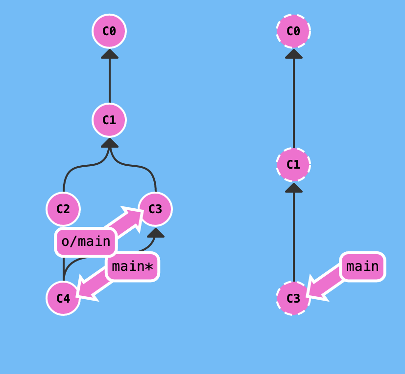

GIT-Pull
Allgemeine Beschreibung zu diesem Befehl
git pull ist ein Befehl, welcher die Befehle "git fetch" und "git merge" vereint. Dadurch erstpart sich der Nutzer / die Nutzerin einen Schritt.
Das ist deshalb notwendig, weil dieser Schritt so häufig benötigt wird und so den "faulen" Entwickler:innen ein Klick zu viel erspart wird.

Git Push und Git fetch mit anschließendem merge führen zu dem selben Ergebnis
Wann GIT-Pull verwenden?
git pull wird am besten "zu Beginn eines jeden Arbeitstages" verwendet.
Damit holt man sich den aktuellen Stand des Repositories auf den Lokalen Rechner und arbeitet stets mit dem aktuellen Stand und hat diesen auch gleich in seinen eigenen gemerged.
Zudem hilft es, vor einem git Push den jeweils aktuellen Stand zu pullen, damit man der Fehlermeldung von Git zuvorkommt, welche einen darauf hinweist, dass bereis extern eine Änderung durchgeführt wurde.
Spätestens dann muss sowieso ein git pull durchgeführt werden.